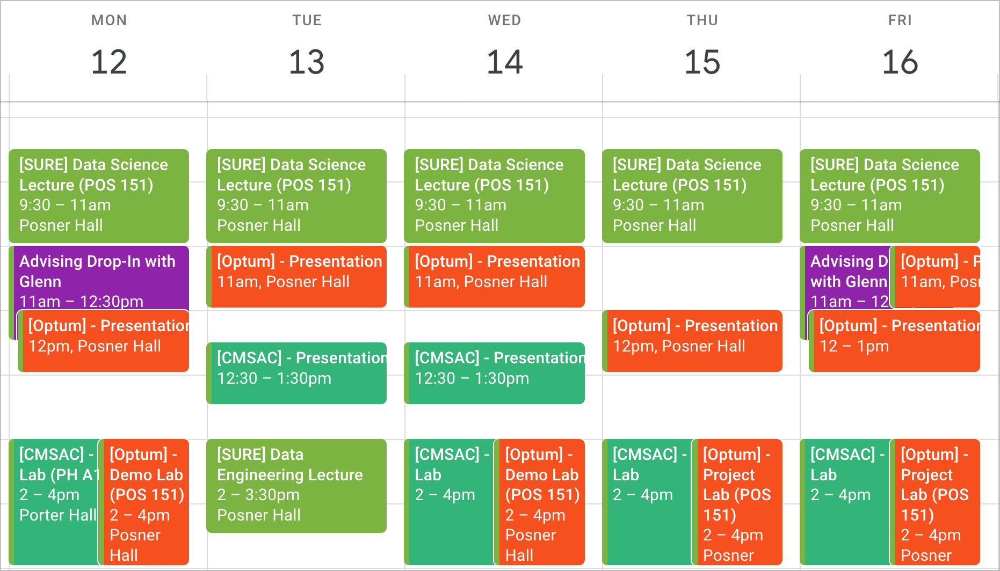

Syllabus
Welcome to the Summer Undergraduate Research Experience (SURE) 2023. The purpose of this program is to explore cutting-edge statistics and data science methodology with applications in healthcare and sports analytics.
SURE 2023 is only made possible through the generous and ongoing support by our program partners in healthcare (Optum), and sports data science (CMSAC).
Team
The day-to-day management of SURE 2023 is a collaborative effort from the following CMU Statistics & Data Science team:
SURE Instructors
- Shamindra Shrotriya (Data Science and Data Engineering)
- Meg Ellingwood (Data Science)
TA Advisors
- Optum: Beomjo Park, YJ Choe, Alec McClean, Akshay Prasadan
- CMSAC: Nick Kissel, Quang Nguyen, Yuchen Chen
Student Support Team
- LeeAnn Chapman (Accounting Assistant)
- Glenn Clune (Academic advisor, Academic Program Manager)
- Jessica Paschke (Program Administrator)
- Teraya White (Academic advisor)
Executive Team
- Peter Freeman, Jamie McGovern, Rebecca Nugent, Ron Yurko
Course Materials
All lecture and assignment materials provided are free! There is no need to purchase anything for the course.
Lectures and lab materials will be openly accessible via links in our schedule.
Additional (free!) supplementary resources can be found here.
Program Objectives
As a Summer Undergraduate Research Experience (SURE), the purpose of this program is to give participating students research experience in applied statistics and data science. In particular the focus is on two broad domains, health (Optum) and sports analytics (CMSAC). Upon the SURE 2023 program completion, we hope that you come out with:
A foundational toolkit of data science and machine learning methods
- You’ll gain experience learning how to learn new techniques in this area– we cannot possibly cover everything to know as a data scientist, especially as the field is constantly evolving, but you should know where to turn for new methods and how to use the vast resources that are available to you.
An understanding of how and when to apply those methods
- Beyond just hearing about techniques like clustering, generalized linear models, and random forests, you’ll get hands-on experience using them for yourselves in a several weeks-long project directly dealing with a question of interest in health or sports analytics
Hands-on experience working with real data, in a research or industry setting
- Data science research is tough but rewarding. There will be setbacks, and you will be frustrated at times. But there will also be breakthroughs, and you’ll be proud of your progress along the way as well as the end result itself.
While this program will involve lectures on data science and data engineering, this is not a summer course in the traditional sense. It is intended to be highly interactive and invigorating. We hope you are as excited about this experience as we are, and if you are willing to put in your time, effort, and enthusiasm, we know that you will have a rewarding summer.
Deliverables
For all SURE students there are three main deliverables for the program. They relate to a single research project, which you will complete as part of a student group. The three related research deliverables are:
- Project report
- Project poster
- Project presentation
Optum students will do their research projects based on healthcare-focused data science topics, while CMSAC will do their research projects in the sports analytics domain. Details on the specification guidance on your research project topic will be provided once we commence the program.
As stated before, this is not a traditional summer course. There are no grades, no weekly assignments (yay!), other than those related to the above deliverables. Weekly milestones will be provided, with standards and rubrics, to guide you along the way. We expect you to take an active role in your learning here: ask questions during lectures, demo labs, and office hours. Seek regular feedback from the instructors and TA advisors in project labs. You’ll get out of this program what you put into it.
If the deliverables for the project seem daunting, just remember that the staff for this program want you to succeed and we are here to support you along the way. Also, actively building these research skills is important for you to practice! And it’s fantastic for your CV!
Program Components
In order to help you meet your program deliverables, there are four main components of the summer program:
- Lectures
- Domain-specific presentations
- Demo labs
- Project labs
We now describe each of the four components in turn below.
Lectures
Lectures will be delivered to both Optum and CMSAC students together. Each morning, we will cover topics in data science, including: data wrangling, exploratory data analysis, and both supervised/unsupervised learning. Separately, Tuesday afternoons will feature lectures on data engineering, including: the UNIX, SQL, tmux, etc..
Domain-specific presentations
Around mid-day, most days of the summer, you will also have presentations from industry professionals in your domain area. On the Optum side, there is a full slate of mandatory virtual talks from members of the United Health Group (UHG) to familiarize you with the work they do and give career advice. These are a fantastic networking opportunity for Optum students for future career opportunities. For the sports side, the first few weeks will involve sports analysts coming in to pitch projects in baseball, hockey, basketball, and soccer. You’ll have the chance to then choose one of these projects to work on for the rest of the summer. There will also be various visitors later on to speak about working in sports analytics.
Demo labs
Then, on Monday afternoons (and some Wednesdays at the beginning of the program), you’ll be able to get hands-on practice applying methods in data science with demo labs run by the program TAs. These labs will be conducted separately for the two groups. All materials (Optum and CMSAC) will be made available on this course website, if you want extra practice from both health and sports domains.
Project labs
Finally, the most important component of the program is the research project, and associated deliverables. In dedicated project-lab sessions, you’ll work in a group of 2-4 students to analyze a dataset in health or sports analytics to answer a research question that is important to practitioners in your field. Past projects have examined geographic differences in the impact of the opioid epidemic, built models to predict passing or running plays in the NFL, and performed cluster analysis of NBA and WNBA players. At the end of the program, you’ll hand in a report summarizing your findings, create a poster, and deliver a short presentation to the community and project stakeholders.
Attendance and participation
Attendance in-person is required at all program events. You are expected to be fully present for all lectures, presentations, and labs, meaning we expect your focus to be on the material being offered. Please do not listen to music, watch videos, check Instagram/TikTok/etc. during these activities. Our team has put forth a lot of effort (blood, sweat, and yes some tears…) into ensuring that this program gives you a rich and interactive research experience. Engaging in such distracting activities is ultimately disrespectful to that organizational effort, as well as to your peers who came here to learn. We hope that such activities and related incidents are avoided, and that we all have a great summer working and learning together. Keep in mind that when you take part in SURE 2023, you must always abide by the code of conduct.
Active participation is also extremely important to this program. If you have any questions, clarifications, or curiosities during lectures, please ask! More importantly, the labs are your time to really dig in and work with data and methods, so we expect you to participate fully in these immersive sessions. For the projects, you have a duty to your group and to your advisors to give it your full effort. If program staff notice that individuals are not adhering to these expectations, we will intervene.
Please note that taking good rest is a critical part of doing effective research. If you are feeling unwell during the program, please stay at home and take rest. However, in such cases it is vital that you notify Glenn Clune (SURE 2023 academic advisor) in a timely manner. This way we can ensure that you get the support you need, when you need it the most.
Resources and Communication
We will use the following four primary communication channels throughout the SURE 2023 program:
- Course Website
- Google Calendar
- Slack
For inquiries regarding scheduling, resources, etc., you should first check the program website and calendar, then reach out to other students, and lastly ask TAs or instructors. Following this order of operations will ensure your needs are swiftly addressed and not bottlenecked by a single person’s availability. It is important to note that all communication throughout SURE 2023 (including the above channels) must abide by the code of conduct.
We now describe each of the four channels and how to use them most effectively, in turn below.
Course Website
This SURE 2023 website will be the main “home base” for the entirety of the program. You are expected to check it regularly throughout each day in the program for any updates. All lecture and demo-lab materials will be provided on the site, freely available. As stated before, there is no textbook for this program, just lecture slides that you’ll be able to access via the schedule. There you will also find specifications for the projects and lab files.
For non-academic concerns, we have compiled a list of helpful guides, e.g., computing setup, Pittsburgh-based resources, fun local activities. We also have dedicated staff bios to help you quickly find the right person for any questions that might arise. Keep browsing around, we’ll keep adding to it over the program to make it your ‘one-stop-shop’ for all your major concerns.
Schedule
In addition to the website, we will be using an online calendar, which you can and should add to your personal scheduling software of choice (Google, iCal, Outlook, etc.), and which you will be expected to keep track of. You will receive a link to this calendar via email. It will be the most up-to-date source of information about when and where things will be happening in the program.
A glimpse of a ‘typical’ week, via the Google Calendar, is as follows:

As mentioned, data-science lectures for all SURE 2023 students will take place in the morning. Then there will be separate presentations for the Optum and CMSAC groups around lunchtime, and in the afternoon we will have demo-labs, data-engineering, and project labs. As mentioned, you are expected to attend program activities in-person during the standard workday.
All SURE and Optum-only activities will take place in Posner Hall (POS 151). All CMSAC will take place in Porter Hall (PH A18A) for the duration of the program. Just two rooms to remember, how easy is that!
In terms of lecture and lab contents, please regularly refer to the schedule. Please note that the planned schedule is subject to change at the discretion of the teaching staff.
Breaks and Holidays
It’s important to take good rest during research. Aside from weekend breaks, we have the following planned breaks and holidays during the program
- Juneteenth: Monday 06/19.
- Independence Day break: Monday 07/03 to Wed 07/05 (inclusive)
- (Optum only) site visit: Monday 07/17 to Thu 07/20 (inclusive)
Using Slack effectively
You will receive an invitation to a Slack workspace for the summer program. This will be the main communication channel for students, faculty, and staff for real time announcements and quick questions. You should check Slack frequently, especially during working hours. Slack messages are preferable to emails, but if official channels are required then email may be more appropriate.
In order to use Slack effectively, please note the following guidelines. Akshay and Yuchen will be the Slack Champions who will help manage our Slack workspace according to these guidelines.
Ask each other/teaching staff questions first.
We encourage you to reach out to your peers in DMs, group chats, in-person, etc. for help before pinging a TA or instructor.
Complicated statistical/programming questions are best asked in person during office hours or labs.
Slack etiquette
To keep the channels organized, please respond using threads, as opposed to starting a new thread each message.
Memes and off-topic discussions should be posted outside of the main channels, in their own dedicated #random channel.
All Slack communication must abide by the code of conduct.
Public channels
#announcements: All major program-wide announcements will be posted here, e.g., room changes and lunch logistics.
#general: Questions/discussion pertaining to the broader program (Optum or CMSAC)
#random: Post your memes, off-topic conversations, outside-events, etc.
Private channels
Fixed usage hours
- TAs or Instructors will generally be active and responsive on Slack during program hours, i.e., 9:30am-4pm weekdays, not on weekends/holidays, etc.